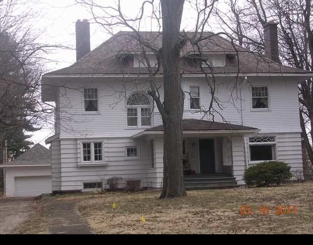

1314 E. Washington

- Marshall and Edith Linn Residence (1905)
- Prairie/Colonial/Victorian style-best of this type Pillsbury
- Offset center hall, Hip roof with a kick, asymmetrical facade, strong horizontal lines created by siding
- Linn was a Supt. of D/N Street Railway
- Also was the residence of Dr. Watson Gailey and C.W. Klemm